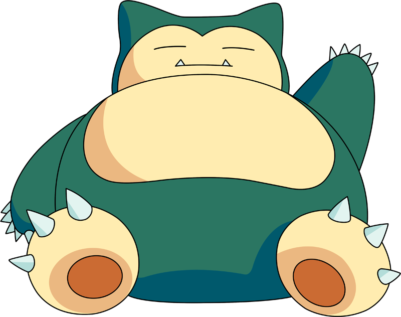

Curiosidades
Conheça fatos sobre os Pokémon mais populares da primeira geração

Charizard
- Tipo: Fogo/Voador. Só se torna Dragão com formas especiais.
- Charizard do Ash não obedecia no início, por se achar mais forte.
- Tem duas Mega Evoluções: X (Fogo/Dragão) e Y (Fogo/Voador).
- Inspirado em dragões ocidentais clássicos.
- É um dos Pokémon mais populares de todos os tempos.
Pikachu
- Mascote oficial da franquia.
- Inspirado em esquilos, mas conhecido como "rato elétrico".
- Voz original feita por Ikue Ōtani desde o início do anime.
- Ash recusou evoluí-lo para Raichu, por respeito à amizade.
- Design foi ficando mais esbelto com o tempo.
Gengar
- Primeiro Pokémon Fantasma na Pokédex (#094).
- Considerado uma sombra viva, talvez de um Clefable.
- Sempre com um sorriso travesso e assustador.
- Forma Gigantamax abre a boca como um portal sombrio.
- Sua presença faz a temperatura do ambiente cair.

Snorlax
- Dorme quase o tempo todo. Acorda só para comer (mais de 400 kg).
- Bloqueia caminhos nos jogos iniciais.
- Inspirado em um colega sonolento da Game Freak.
- Tem altíssimo HP e ataque, sendo um verdadeiro tanque.
- Sua forma Gigantamax tem uma floresta crescendo sobre ele.